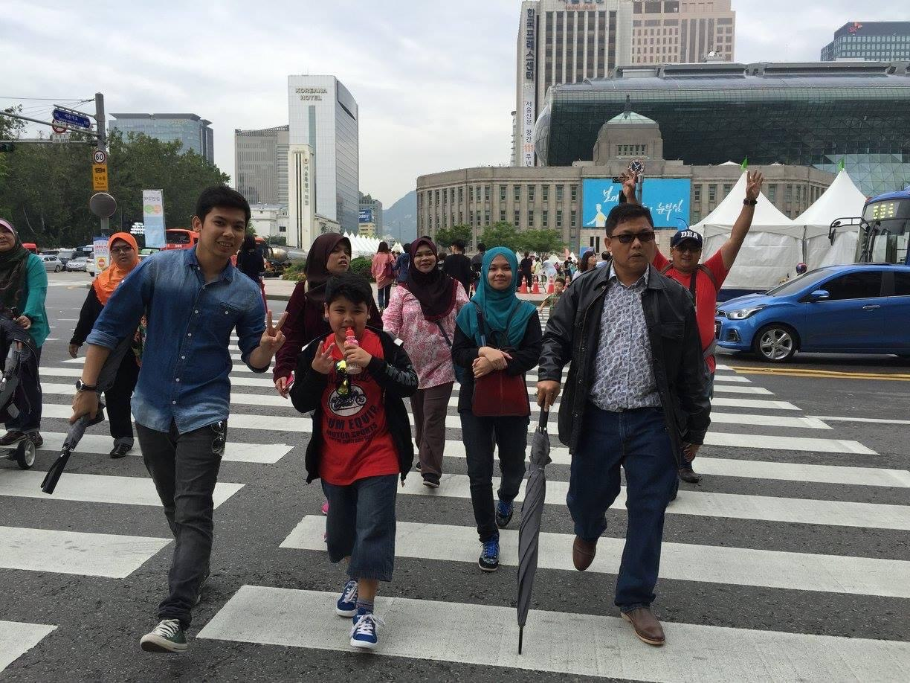
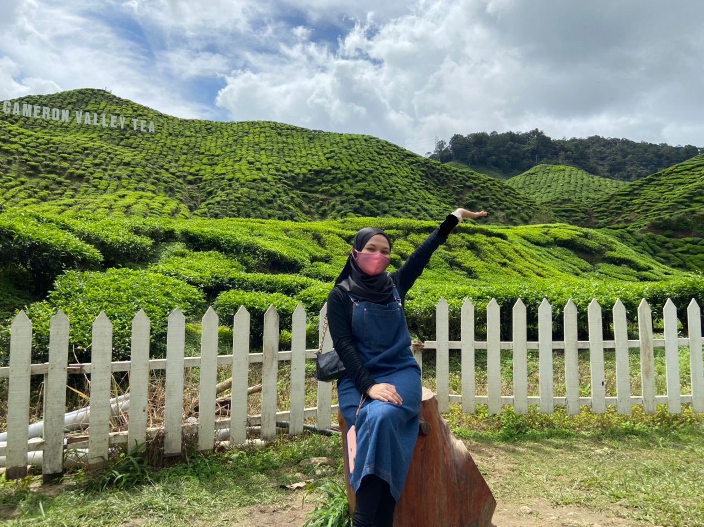
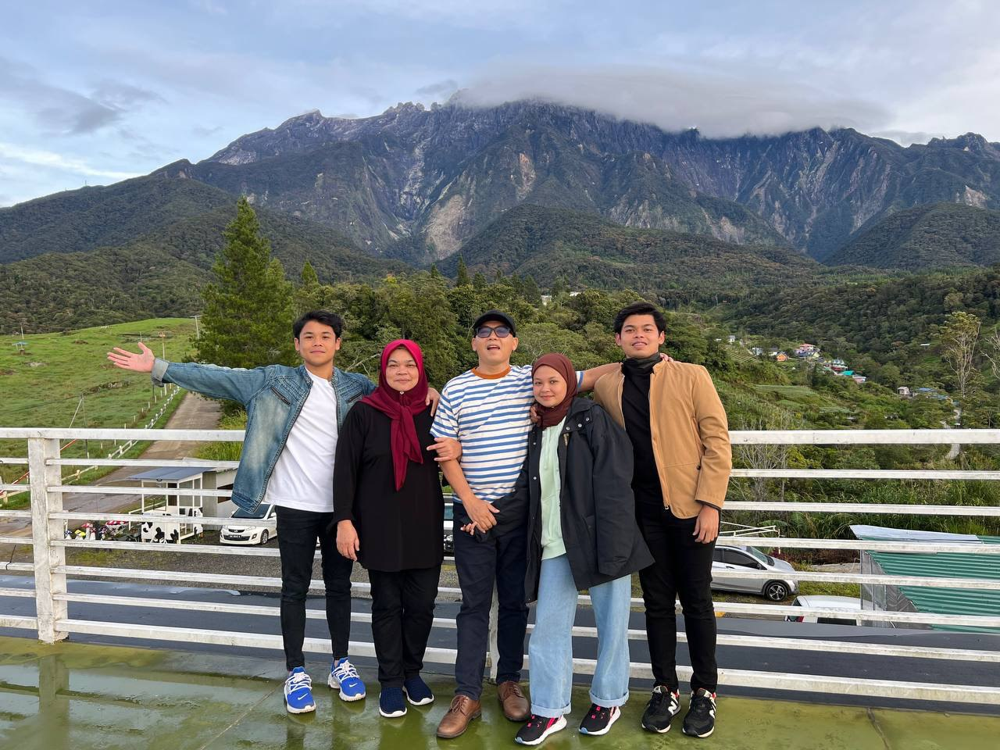

<!DOCTYPE html>
<html lang="en">
<head>
<title>EXPERIENCE</title>
<meta charset="UTF-8">
<meta name="viewport" content="width=device-width, initial-scale=1">
<link rel="stylesheet" href="https://www.w3schools.com/w3css/4/w3.css">
<link rel="stylesheet" href="https://fonts.googleapis.com/css?family=Lato">
<link rel="stylesheet" href="https://cdnjs.cloudflare.com/ajax/libs/font-awesome/4.7.0/css/font-awesome.min.css">
<style>
body {font-family: "Lato", sans-serif}
.mySlides {display: none}
</style>
</head>
<body>
</body>
</html>
<!-- Navbar -->
<div class="w3-bar w3-black w3-card">
    <a href="index.html" class="w3-bar-item w3-button">HOME</a>
    <a href="AboutMe.html" class="w3-bar-item w3-button">ABOUT ME</a>
  <a href="experience.html" class="w3-bar-item w3-button">EXPERIENCE</a>
  <a href="educational.html" class="w3-bar-item w3-button">EDUCATIONAL</a>
    <a href="family.html" class="w3-bar-item w3-button">FAMILY</a>
    <a href="gallery.html" class="w3-bar-item w3-button">GALLERY</a>
    <a href="music.html" class="w3-bar-item w3-button">MUSIC</a>
  </div>
<div class="w3-container w3-content w3-center w3-padding-40" style="max-width:2000px" id="band">
			     
			      </div>
			 <div class="w3-container w3-content w3-center w3-padding-40" style="max-width:2000px;margin-top:0px" id="band">
		     <h3>SOUTH KOREA</h3>
			 <p class="role">2015</p>
			 <p>South Korea was the first place I ever vacationed outside of Malaysia with my family. It was a
			very fun vacation because I was able to go to a lot of places there. At that time i was very
			interested in a group of korean singers or known as kpop and i was very excited to go to korea
			in the hope of meeting one of the artists i was interested in. But at that time I only had time to
			go to their company, so I hope one day I can meet them face to face. Among the places I went
			were Nami Island, Namsan Tower and many more but these are my favorite places because of
			their very beautiful view.</p>
		 </div>
<div class="w3-container w3-content w3-center w3-padding-40" style="max-width:2000px" id="band">
			     
			  </div>
			 <div class="w3-container w3-content w3-center w3-padding-40" style="max-width:2000px;margin-top:0px" id="band">
		     <h3>CAMERON HIGHLAND</h3>
			 <p class="role">2019</p>
			 <p>Although this is not the first time I went to Cameron highland, it was a lot of fun as it was my first
			vacation after MCO due to Covid-19. This was also our last vacation with the eldest brother
			before he got married. Among the places we went were tea plantations, flower gardens and
			strawberry farms. We also had the opportunity to pick fresh strawberries from the tree. The
			weather there is also very cold and cloudy. I hope to get to Cameron highland again but
			together with my best friend.</p>
		 </div>
<div class="w3-container w3-content w3-center w3-padding-40" style="max-width:2000px" id="band">
			     
			  </div>
			 <div class="w3-container w3-content w3-center w3-padding-40" style="max-width:2000px;margin-top:0px" id="band">
		     <h3>SABAH</h3>
			 <p class="role">2021</p>
				 <p>vacation this time, there were only five of us because my brother and sister couldn’t make it
				together due to work. In Sabah, many places we visit such as sandakan, kundasang and
				manukan island. I also went to visit orangutans and this was the first time I saw them in front of
				my eyes. on manukan island many activities we do such as snorkeling, paragliding and banana
				boat. it's the most fun moment! The part I liked the most was the food there which was very
				tasty, the portions plentiful and cheap. I hope one day I can go there again with all my family
				members.</p>
